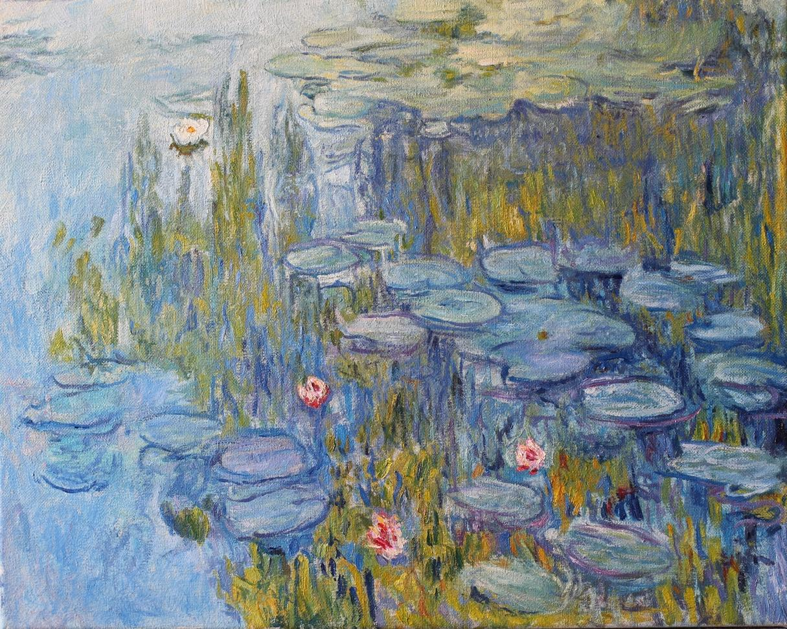

Savoir, comprendre et rêver
Le génie français Victor Hugo a écrit un jour : « L'esprit humain possède trois clés magiques. Ces clés ouvrent tout dans le monde ! Ces clés sont le nombre, la lettre et la note. Savoir, comprendre et rêver — là réside toute notre vie ! »
Dès son plus jeune âge, le génie français Claude Monet a reconnu sa vocation d'artiste. Tout au long de sa vie, il a cherché comment réaliser son rêve ultime au sein de son art bien-aimé. À savoir : capturer le mouvement de l’air et la chaleur d’une journée ensoleillée dans ses peintures ; saisir sur la toile la danse insaisissable de la lumière et les parfums d’un jardin d’été... Et c’est ainsi que sont nés des chefs-d’œuvre !
L’un d’eux est la magnifique série de peintures « Les Nymphéas ». « Paysages de reflets », comme l’artiste lui-même les appelait. Délicats, captivants par leur beauté fragile. Il les a peints tout au long de sa vie. Voilà une véritable histoire d’amour !
Le prix d’un chef-d’œuvre
Aujourd’hui, « Les Nymphéas » sont devenus l’incarnation non seulement du chef-d’œuvre en tant que phénomène, mais aussi de la valorisation ultime qu’un tel phénomène peut atteindre. À maintes reprises, lors des célèbres ventes aux enchères de Sotheby’s et Christie’s à Londres, les connaisseurs de Monet acquièrent ces œuvres pour la somme vertigineuse de 20 à 40 millions de livres sterling !
Poésie mystérieuse
Mais revenons aux rêves et aux aspirations de Claude Monet… N’est-ce pas exactement ce que le brillant Claude Debussy, contemporain et compatriote de l’artiste, écrivait au sujet de son propre art bien-aimé ?
« Seuls les musiciens possèdent cette magie, une capacité presque sorcière à capturer toute la poésie de la nuit et du jour, de la terre et du ciel, à transmettre leur atmosphère, leur pulsation sans limites et leur mystique dissolution dans le silence… »
Et plus loin : « ... Clair de lune ! Est-il vraiment possible de recréer sa "poésie mystérieuse" en peinture, ou même en photographie, dans l’art cinématographique ?... »
Rejoignons ces génies pour tenter de capturer la « poésie mystérieuse » de la nature.
Claude Monet : « Les Nymphéas »
